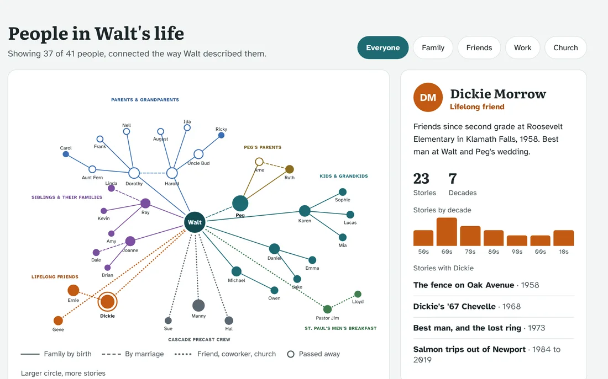
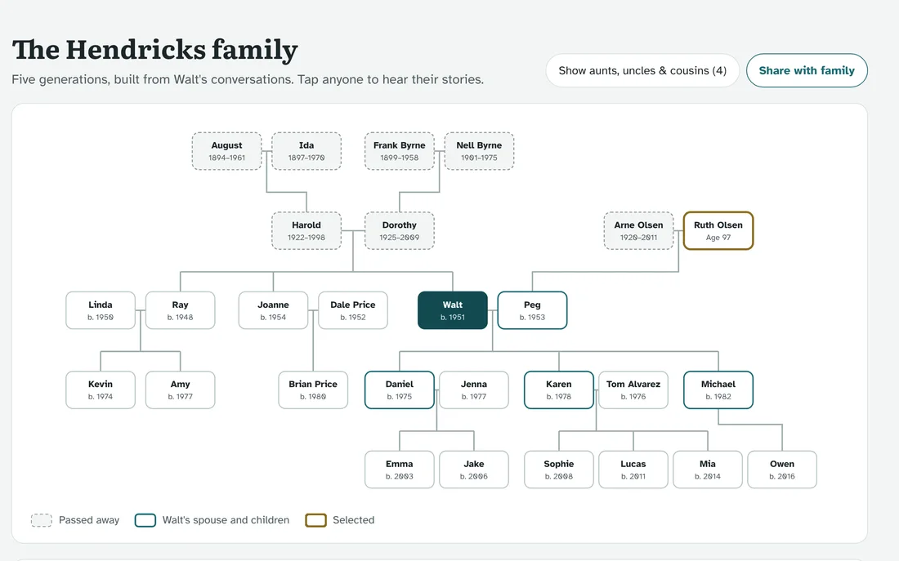
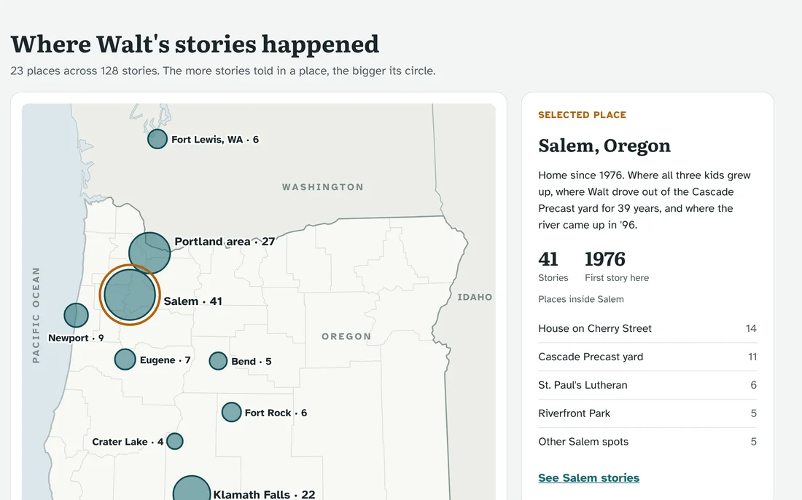
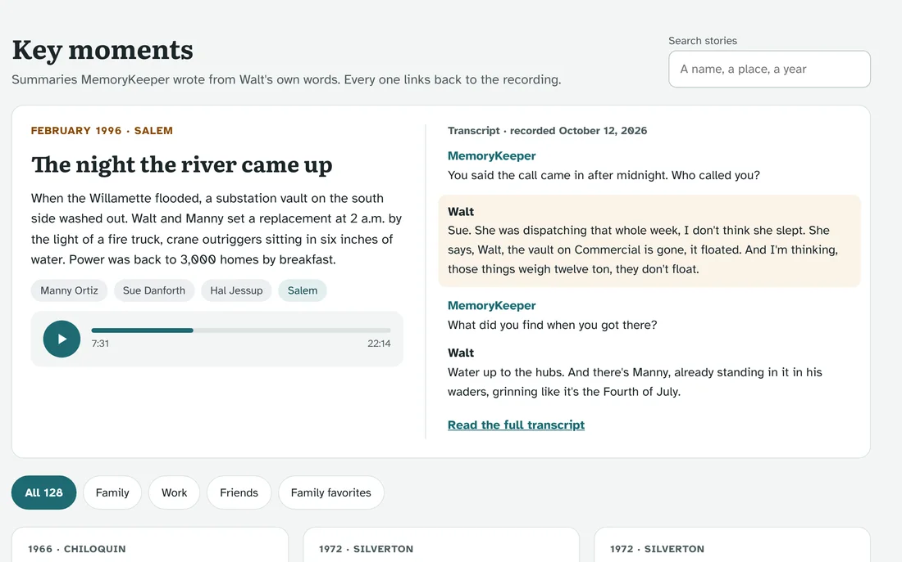

How I work
Product leadership at the intersection of technical depth and commercial clarity
I have spent my career in environments where the product problem is genuinely hard: regulated markets, complex infrastructure, AI systems with real reliability stakes, and 0-to-1 launches with no existing playbook. My value is in making the complexity legible — to engineering, to leadership, and to customers.
I start with the gap between what customers experience and what the system was designed to deliver. That gap is where the real product problem lives.
I write requirements that engineering can execute without ambiguity: testable acceptance conditions, edge cases identified before handoff, and tradeoffs made explicit rather than deferred.
I have used LLM-driven discovery, prompt-engineered diagnostic workflows, and ML-backed alerting in production products. I treat AI as a capability that requires clear human review boundaries, not as a roadmap item.
I define success metrics before writing requirements, not after. The question I start with: what would have to be true in the data for us to know this worked?
Case Studies
Five products. Five different classes of problem.
Each case study reflects a distinct product challenge: AI diagnostics, SaaS monetization, cross-org platform consolidation, zero-to-one hardware plus software, and mobile delivery at scale.
SparkAI — AI-Powered EV Charger Diagnostics
Problem
EV charger fleets were generating high volumes of restart and connectivity failures with no systematic way to surface root causes from telemetry. Support teams were responding reactively, costs were rising, and fleet operators were losing confidence in system reliability. The raw OCPP data contained early warning patterns — but they were not being analyzed in any structured way.
Approach
I partnered with a strategic software partner's engineering and data science teams to define the diagnostic product from concept to delivery. That meant translating telemetry gaps into structured requirements, working with data scientists to determine which ML anomaly signals were reliable enough to surface to operators versus which needed more model training, and designing the operator-facing troubleshooting workflows that turned model output into guided next steps. I also built multi-layer prompt-engineering workflows to synthesize requirements and prioritize diagnostic opportunities across the roadmap.
Key decisions
The most important product decision was defining where the model's confidence ended and where human judgment needed to begin. We deliberately did not surface low-confidence anomalies to operators in the first release — a deferred feature that would have eroded trust if we had shipped it prematurely. I also pushed for proactive alerting before any reactive troubleshooting UI, because the customer experience problem was about anticipation, not just resolution.
Outcome
Lesson
The PM's job in an AI product is not just requirements and prioritization. It is knowing where the model's confidence ends and where human judgment needs to begin — and building that boundary into the product explicitly before it becomes a support problem.
Charger Network Manager — SaaS Activation and Monetization
Problem
The Charger Network Manager SaaS platform had monthly activation below 12%, overall attachment around 36%, and subscription margins near 12%. The instinct in the organization was that the product itself was the problem. After mapping the activation funnel step by step and interviewing installers and sales reps directly, I traced the failure to a specific point: the handoff between physical hardware installation and digital software activation. Installers were completing the hardware setup and skipping activation entirely because there was no prompt to do it and no consequence for skipping it. There was also no historical activation data to work from — nobody had been tracking it systematically, partly because bundled invoicing didn't separate software subscriptions from hardware and accessories. Before I could even establish what the starting activation rate really was, I had to build calculated fields to break those components out of the sales data.
Approach
I restructured the entire commercial and onboarding model simultaneously. On the packaging side: collapsed multiple tiers into a single offering with one, two, three, four, and five year SKUs, then bundled a year-one term with every charger and adjusted pricing so the bundle remained margin-positive. On the vendor side: renegotiated terms so Eaton paid only for activated trials, aligning cost structure with realized value. On the activation side: designed in-box quickstart materials and a screen cling with a QR code into a guided onboarding flow, addressing installer drop-off at the physical-to-digital handoff. Then added self-service renewal, multi-charger automation, training, and sales collateral.
Key decisions
The decision to move simultaneously on packaging, vendor economics, and onboarding rather than sequentially was the right call — each change reinforced the others. The decision to renegotiate vendor terms before changing onboarding was critical: it created a cost structure that could absorb the free year-one bundle without margin erosion.
Outcome
Lesson
Adoption fails at handoff, not at product quality. The activation gap was invisible in aggregate metrics and only visible when I mapped the physical installation sequence against the expected digital flow. Funnel analysis and direct installer interviews together — neither alone — surfaced the root cause.
Global EMS Gateway — From Regional MVP to Unified Platform
Problem
I owned a regional EV charging gateway limited to local load balancing for United States and Canadian fleets, capped at 25 chargers and running OCPP 1.6J, with no BESS or microgrid scope. While leading that program, cross-team investigation I initiated surfaced that EMEA was independently building a similar gateway focused on DER and microgrids. Shortly after, a third parallel effort turned up underway in APAC. All three teams were duplicating significant technical scope without shared awareness of one another.
Approach
I personally led the investigation that surfaced the EMEA and APAC efforts, then authored the business case to unify all three into a single global EMS gateway spanning EV, BESS, and microgrid use cases. Securing alignment meant building consensus across regional stakeholders who had each already invested real engineering time in their own approach, not simply mandating a single roadmap from outside. I contributed requirements, customer input, and field scenarios into the consolidated program, then joined a multi-region engineering summit to harmonize protocols, packaging, and phased launch.
Key decisions
The most consequential decision was treating this as a cross-region alignment problem first, not a technical architecture problem. The underlying protocol and platform choices were less contentious than convincing three teams that had each already built real momentum around their own approach to fold into a shared roadmap. Establishing a single certification path early, before the final architecture was locked, prevented the kind of certification divergence that would have made a later merge far more expensive.
Outcome
Lesson
The biggest platform risks are often organizational, not technical. Three capable teams built genuinely good solutions to what each believed was a regional problem. The actual product work was discovering that it wasn't regional at all, then making the case for consolidation before the divergence became too expensive to unwind.
Provolt Room Controller — Zero to One in a Code-Driven Market
Problem
Energy codes were pushing small and mid-size commercial projects toward multi-box lighting control systems that installers found complex, time-consuming, and expensive. The market needed a single low-cost controller that met IECC, ASHRAE 90.1, and Title 24 requirements without requiring a specialist to commission it. No product in the market solved this cleanly.
Approach
I identified the gap, built the business case, and owned the product from concept through launch and iteration. The core product decision was to replace DIP switch and trim pot configuration with Bluetooth-based mobile commissioning — treating the contractor's phone as the primary configuration tool. I designed a "screwdriver replacement" app flow with contextual on-screen help and step-by-step guided setup, added seven-day adaptive occupancy behavior, improved auto calibration, and enabled two daylighting zones from a single photocell. The enablement side was equally important: demo kits, training videos, and field collateral that let distributors and reps demonstrate the product in under five minutes.
Key decisions
The commissioning experience was the actual product differentiator, not the hardware specification. The decision to invest engineering time in the mobile app UX rather than adding hardware features was the inflection point. Contractors who could commission a room in minutes on their phone became repeat buyers. The lesson from field feedback was that confidence in the tool matters more than feature count.
A second, higher-stakes decision came after launch: leadership had settled on Zigbee as the wireless standard for the next generation of products, and I disagreed. Having tracked the emerging Bluetooth SIG 5.0 mesh rollout closely, I spent months building the case for Bluetooth mesh instead, against sustained resistance. The advocacy succeeded — Bluetooth mesh became the standard for every subsequent product with a mobile app, and by the time I left Leviton, six product lines originally scoped as Zigbee-only had been built on it instead.
Outcome
Portfolio context
Provolt was the flagship product in a broader commercial IoT portfolio I built and retained over time, including EZMax and GreenMAX relay panels, DRC wireless controls, IRC and Sapphire room controllers, and OEM white-label production for other manufacturers.
Lesson
In a hardware-plus-software product, the commissioning experience is the product. Contractors do not read manuals. They judge a product by whether they can figure it out on a job site in five minutes. Design for that moment first.
Cync Smart Home App — Building a Delivery System That Held
Problem
The Cync mobile app suffered from UI inconsistencies, missing states, and incomplete test coverage across complex flows. Release cycles were delayed by rework discovered late in QA. Design, engineering, and QA were operating from different mental models of what done meant, and the gaps between them were showing up as defects rather than being caught in discovery.
Approach
I standardized the design-to-engineering workflow by linking fully mapped Figma screens to precise Gherkin BDD acceptance criteria, so that every screen state had a testable definition before engineering began. I then built LLM-driven journey models to explore edge cases, transitional states, and missing flows that traditional test plans had not caught — turning AI-assisted discovery into structured acceptance criteria rather than informal observations. I also introduced lightweight in-app surveys and NPS signals to validate whether UX changes were landing and to surface new friction points between releases.
Key decisions
The decision to require fully mapped Figma screens before engineering kickoff was the highest-leverage change. It slowed discovery slightly and sped up everything after. The LLM journey modeling was additive — it found real gaps — but its value depended entirely on the outputs being reviewed by an engineer before they became requirements. AI-generated edge cases are hypotheses, not specifications.
Outcome
Lesson
Distributed teams need shared artifacts, not shared meetings. The Figma-to-Gherkin workflow reduced the surface area for misalignment at every handoff. The meeting where everyone agrees is not the problem — the artifact that everyone interprets differently is.
Building Now
Hands-on AI, built end to end
Every case study above is work I led inside a company. This one I built myself.
MemoryKeeper — AI Oral History for Memory Care
Problem
Watching people around me age, I saw how much of someone's story disappears because no one captured it in time. Families rarely have a simple, structured way to do it. Writing a memoir means facing a blank page. Recorded interviews depend on someone knowing what to ask. For people experiencing memory decline, both get harder every month. What's missing is something that works through natural, self-paced conversation, asking real follow-up questions and using memory recall techniques to surface older memories that are otherwise hard to reach.
Approach
I took MemoryKeeper from concept through an external beta myself. I defined the vision, target users, MVP requirements, and user journeys, then built the full stack hands-on with Claude Code, Railway, PostgreSQL, and third-party speech-to-text and text-to-speech. The AI conducts the conversation, follows the threads worth following, and progressively structures what it hears into people, places, relationships, events, and a life timeline. Families get a dashboard with a relationship map, family tree, places map, and timeline, plus access to the original recordings and transcripts. Once the product was live, I recruited outside testers and ran a beta to see how real people would use it.
Key decisions
The core design principle was radical simplicity. The primary interface has one call to action: Start Talking. There's no setup, no blank document, and no need to decide where a story begins. For users with memory challenges, every extra step is a reason not to start.
The second decision was to structure memories, not just transcribe them. A transcript preserves words. A connected map of people, places, and events preserves a life in a form a family can actually explore.
Status
External beta completeThe next phase focuses on validating with the population the product is built for, working alongside memory care and elder care researchers rather than recruiting from my own network.
Lesson
In the beta, engagement fell well short of the enthusiasm testers showed when they signed up. The real issue was who I'd recruited: younger, tech-comfortable people who made good product testers but didn't have the problem. Behavior beats enthusiasm, but the wrong audience can answer the wrong question.
The product




Screens recreated with a fictional storyteller. Real beta conversations stay private.
Craft
How I structure product work
These are the patterns and methods I apply consistently across roles and product surfaces.
Requirements
I write engineering-ready requirements with inline validation conditions rather than separate test cases. Each requirement specifies what must be true in the system for the feature to be considered complete. Tradeoffs are documented in the requirement, not discovered in review.
Prioritization
I prioritize against a small set of explicitly defined success metrics, not a feature backlog ranked by intuition. The first question I ask about any initiative: what would have to be true in the data for us to know this worked?
AI-Assisted Discovery
I use LLM-driven journey modeling and prompt-engineered workflows to surface edge cases and missing states before they reach engineering. AI outputs are hypotheses — they require engineer review before becoming requirements. I build that boundary into the process explicitly.
Stakeholder Alignment
I write business cases before asking for roadmap investment, not after. The business case defines the problem, the bet, the success criteria, and the risks — in that order. It is not a pitch deck. It is a decision document.
Metrics Frameworks
I build lightweight product metrics frameworks that track adoption, reliability, and financial performance across the lifecycle — not just at launch. The goal is to make lifecycle decisions on data rather than on roadmap pressure or executive intuition.
Cross-Functional Delivery
I structure delivery around shared artifacts rather than shared meetings. Clear acceptance conditions, linked design specs, and explicit done definitions reduce the surface area for misalignment at every handoff between design, engineering, and QA.
Domain Coverage
Technical and domain fluency
Built across more than a decade of work in energy infrastructure, connected devices, AI systems, and enterprise SaaS.
- Prompt engineering
- LLM-driven discovery
- ML anomaly detection
- Telemetry pipelines
- Responsible AI practices
- GenAI forecasting
- RESTful APIs
- Microservices
- SaaS architectures
- IoT edge and cloud
- OCPP telemetry
- AWS, Azure
- EV charging infrastructure
- CSMS platforms
- DER and microgrids
- BESS integration
- OpenADR 2.0
- Global EMS gateways
- IECC, ASHRAE 90.1
- Title 24 compliance
- Relay panel systems
- Bluetooth commissioning
- Wireless IoT controls
- National account solutions
- Mobile app delivery
- Cross-platform frameworks
- BDD and Gherkin
- Figma workflows
- SaaS monetization
- Activation optimization
- SQL
- Power BI, Tableau
- Jira, Confluence
- Funnel analysis
- NPS instrumentation
- Predictive analytics